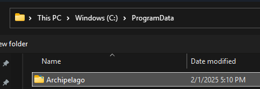
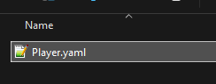
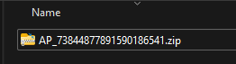
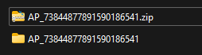
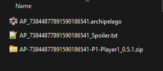

| Home | | | Set up guide | | | Discord | | | Credits |
|
|
|
| Software Setup | | | Creating Settings | | | Generating a Seed | | | Generating the Mod Zip | | | Installing the Generated Mod |







Generating the Mod Zip